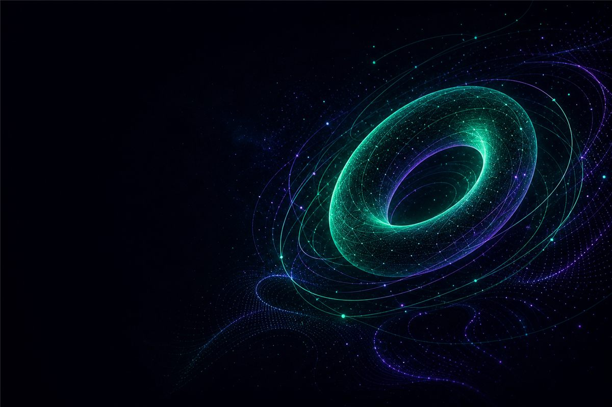
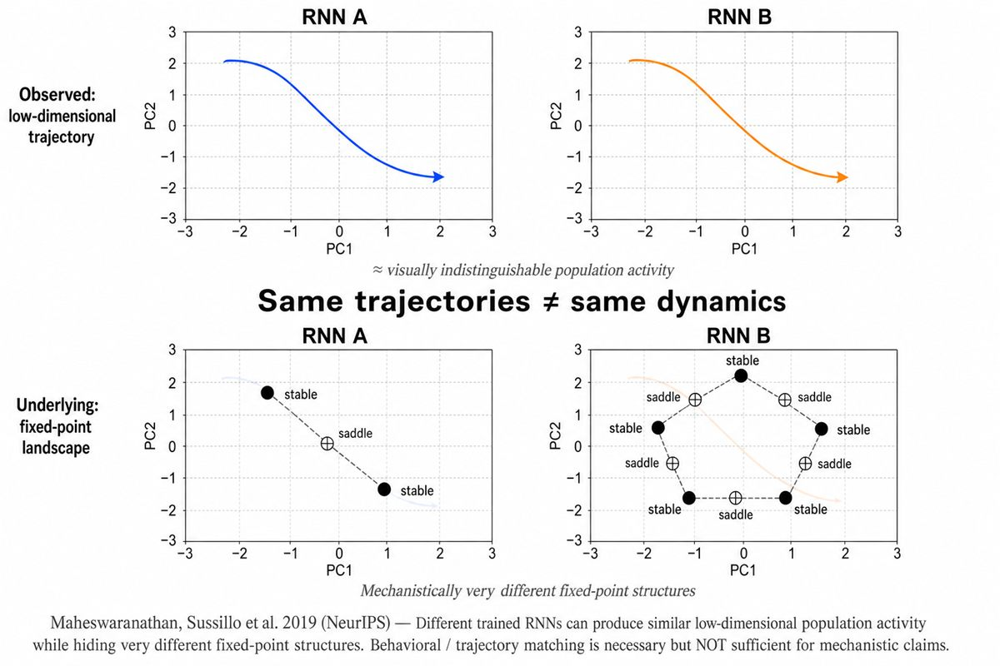
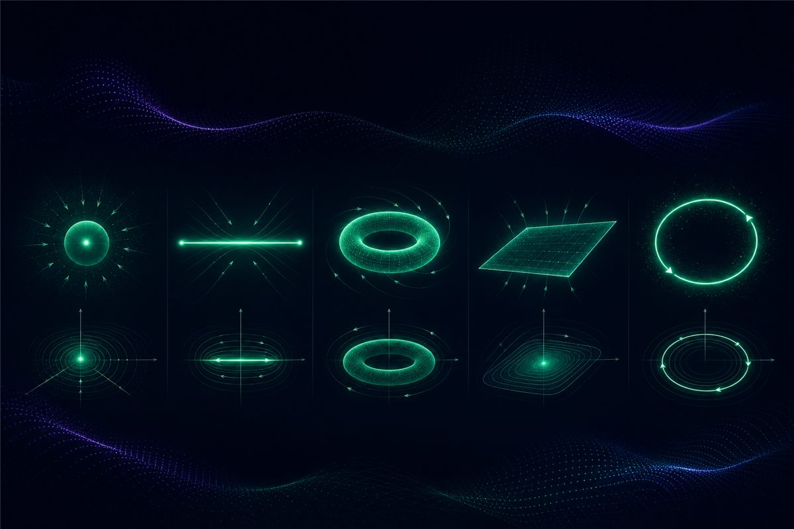
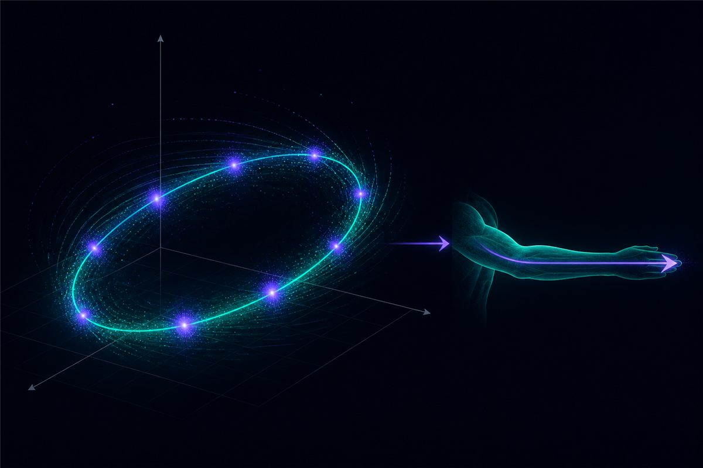
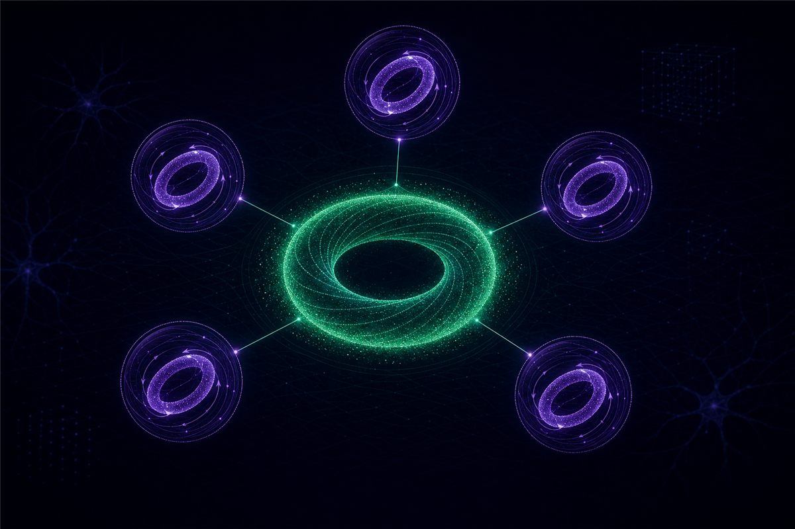

Opening the Black Box：經由動力學的運算，與大腦的幾何骨架
大腦或許不是用「編碼」工作，而是用「幾何」工作。David Sussillo 的研究路線——從 FORCE 學習法則、定點分析，到吸引子流形——把循環神經網路從不可知的統計黑盒子，變成一座可解剖、可驗證的大腦代理。

系統神經科學長期被一個尷尬的問題困住：當我們把電極插進前額葉皮質，記錄到的單一神經元放電，往往「亂七八糟」。同一個神經元，在不同任務階段呈現截然不同的反應曲線，找不到乾淨的 tuning curve。這種混合選擇性（mixed selectivity）讓傳統「找出某顆神經元編碼什麼」的解碼策略幾乎失效。
David Sussillo 的研究，提供了一條截然不同的出路。他主張：神經運算的本質，不在單一神經元的靜態編碼裡，而在大量神經元構成的高維狀態空間中、隨時間演化的軌跡。這就是「經由動力學的運算」（Computation Through Dynamics, CTD）框架。本文整理這條研究路線的三個支柱——FORCE 學習、定點分析、吸引子流形——以及它對臨床與跨領域思考的啟發。
一、範式轉移：從單神經元調諧到群體狀態空間
在 Sussillo 提出這套框架之前，系統神經科學主要依賴「單一神經元調諧」分析法，試圖尋找放電率與外部參數（速度、方向、刺激強度）的相關性。這在初級感覺與運動皮層相當有效，但到了前額葉皮質就失靈——因為混合選擇性讓單細胞層級看不到任何穩定模式。
CTD 框架的關鍵跳躍，是把分析的單位從「神經元」換成「群體軌跡」。想像把 N 個神經元的瞬時放電，視為 N 維空間裡的一個點；系統隨時間演化，就是這個點畫出一條軌跡。鐘擺只需要 2 維（角度、角速度），Lorenz 系統需要 3 維，而一個 1000 顆神經元的網路名義上有 1000 維——但它的軌跡通常坍縮到一個低維流形上。
在這個視角下，混合選擇性不再是雜訊，而是高維流形動力學在低維（單神經元）空間的投影。問題從「這顆神經元編碼什麼」，變成「整個群體的軌跡，受到什麼樣的幾何結構約束」。
RNN 作為「可解剖的大腦代理」
Sussillo 的方法論有一個三步驟的核心循環：先訓練一個循環神經網路（RNN）執行與動物相同的認知或運動任務；接著對訓練好的 RNN 進行逆向工程，解剖其內部結構；最後把從人工模型獲得的機制性假設，拿回生物神經數據（如恆河猴的 Utah Array 記錄）中驗證。
這裡 RNN 不是大腦本身，而是一個可以隨意打開、測量、擾動的代理。它提供的是一種「足夠性證明」（sufficiency argument）：如果 RNN 用某個幾何機制就能完成任務，那麼大腦也可能用相同的機制。這把電生理研究從「描述現象」推進到「提出可檢驗的機制假設」。
二、FORCE：馴服混沌的學習法則
要把 RNN 當代理，第一個難關是：具備混沌動力學的循環網路極難訓練。傳統的時間反向傳播（BPTT）在混沌系統中，梯度容易爆炸或消失；而早期的回聲狀態網絡（ESN）需要用「鉗制（clamping）」技術強迫網路看到正確目標，這在生物學上並不自然。
2009 年，Sussillo 與 Larry Abbott 在 Neuron 提出 FORCE（First-Order Reduced and Controlled Error）學習法則。它的核心是利用遞歸最小二乘法（Recursive Least Squares, RLS），在每一個時間步即時、快速地微調輸出權重。
與梯度下降「沿著梯度走一小步」不同，RLS 幾乎是「直接跳到當前最佳解」。因此誤差從第一步起就被壓得很小，不會在完整的反饋迴路裡被混沌放大。FORCE 最關鍵的突破在於：它允許反饋路徑保持完整、不需鉗制，讓網路學會穩定自身的混沌，而不是被外力強制矯正。
三、開啟黑盒子：定點與慢點分析
訓練好的 RNN 仍是一個黑盒子。2013 年，Sussillo 與 Omri Barak 在 Neural Computation 發表《Opening the Black Box》，提出一套打開它的數學框架：尋找狀態空間中的定點（fixed points）與慢點（slow points）。

把訓練好的 RNN 視為動力系統 ẋ = F(x, u)。定點 x* 是速度為零的位置（F(x*, u*) = 0）；慢點則是速度極小、但仍可線性化分析的區域。由於高維非線性系統無法直接解方程，Sussillo 採用數值方法：定義一個輔助函數 q(x) = ½‖F(x, u*)‖²（代表系統的「動能」），透過最小化 q(x) 來定位這些隱藏的結構。
接著在每個定點附近計算 Jacobian 矩陣，分析其特徵值，將定點分類：
| 類型 | 特徵值實部 | 動力學意義 | 運算角色 |
|---|---|---|---|
| 穩定吸引子 (Attractor) | 全部為負 | 周邊軌跡收斂 | 長期記憶儲存 |
| 不穩定排斥子 (Repeller) | 全部為正 | 周邊軌跡發散 | 不穩定模式 |
| 鞍點 (Saddle) | 正負並存 | 部分吸引、部分排斥 | 決策邊界、狀態切換 |
這就是把「神經元放電率」翻譯成「特徵值複平面散點圖」的概念跳躍。一個經典範例是 3-bit Flip-Flop：一個 1000 神經元的 RNN 儲存 3 個獨立記憶位元，逆向工程精確識別出 8 個穩定吸引子（對應 2³ 個記憶狀態）加上多個鞍點。輸入脈衝把軌跡推過鞍點這道分水嶺，再沿著「異宿軌（heteroclinic orbit）」完成狀態切換。
四、五種吸引子流形 = 五種運算
把這套分析套用到不同任務訓練出的網路，會反覆看到幾種固定的幾何結構。它們構成了一套「運算的幾何詞彙表」：

- 點吸引子（Point）：孤立穩定定點，負責離散狀態的記憶與分類，抗噪。例：3-bit Flip-Flop。
- 線吸引子（Line）：一系列邊際穩定定點構成的一維曲線，負責連續標量的時間積分與證據累積。例：PFC 決策、腦幹眼動積分器。
- 環形吸引子（Ring）：封閉一維圓環，負責連續角度／方向的記憶。例：果蠅 heading direction circuit。
- 平面吸引子（Plane）：二維邊際穩定流形，負責多變數並行記憶與二維積分。
- 極限環（Limit Cycle）：穩定閉合軌道，負責節律生成與精確定時。例：運動皮層的旋轉動力學。
五、四個經典案例
Mante 2013：PFC 的線吸引子與選擇向量
恆河猴在「顏色」與「運動」兩種情境（context）之間切換決策。Mante 等人發現，PFC 用一個近似線吸引子來累積感官證據；而「選擇向量」在指定情境中與相關輸入軸對齊（投影累積），與無關輸入軸保持正交（雜訊衰減）。關鍵洞見是：情境切換不需要物理上的「門控」，幾何上的正交隔離就足夠了。
M1 旋轉動力學：運動皮層是動力產生器

Sussillo 與 Churchland 訓練 RNN 產生多相式肌肉指令（EMG）。即使動作本身是直線的，訓練後的網路自發突現出旋轉動力學。這支持了一個重新框定：主要運動皮層 M1 不是把速度、方向等參數編碼起來的「查表器」，而是一個產生時變肌肉指令的動力產生器，其幾何結構是短期極限環。
Driscoll & Sussillo 2022：動態基元的模組化重用

當單一 RNN 被訓練執行 15–20 個認知任務時，Driscoll 與 Sussillo 發現網路並沒有為每個任務重新布線，而是重用既有的動力學結構（dynamical motifs）。所有需要記憶圓形變數的任務（MemoryPro、IntegrationModality 等）共享同一個環形吸引子；切換任務時，rule input 只是平滑地旋轉或平移既有的動力景觀，而非重建電路。這對應到生物智慧的快速遷移學習與任務切換效率。
六、跨領域與臨床意義
這套幾何語言，把 Sussillo 的計算神經科學與 Strogatz 的非線性動力學連在了一起。Strogatz 用「奇異吸引子」與「伸展與摺疊」描述混沌的幾何本質；Sussillo 則把同一套吸引子詞彙，轉化為大腦運算的「語法」。兩者共用數學語言，但目標不同：一個是顯微鏡，一個是把顯微鏡對準大腦的人。
Kuramoto 同步模型則提供了「低維流形如何從無序中湧現」的數學基礎：當耦合強度超過臨界值，大量隨機頻率的振子會自發同步，序參數從接近零飛升到接近一，高維系統坍縮到一個二維的 Ott-Antonsen 流形上。
七、我如何理解這套框架
對一個同時做臨床與認知神經科學的人來說，CTD 框架最迷人的地方，在於它把「機制」這個詞還給了系統神經科學。過去我們能描述神經元放電與行為的相關性，卻很難說出「運算到底是怎麼發生的」。Sussillo 的回答是：運算發生在狀態空間的幾何結構裡——記憶是定點，決策是軌跡分叉，節律是極限環。
但我也提醒自己保持懷疑。FORCE 依賴的全局誤差計算，在真實突觸層級尚無明確的生物對應；目前的速率網路忽略了細胞類型多樣性與樹突運算；而低維幾何流形能否撐起「組合爆炸」性質的高階語言與抽象推理，仍是開放問題。這套框架是強大的假設產生器，但它生成的是假設，不是定論。
訓練好的 RNN 像一具被風乾的標本：它告訴你「這個解法是可能的」，卻不保證大腦真的選了同一條路。逆向工程給的是地圖，不是領土。
Take-home Messages
- 大腦用幾何工作，不是用編碼工作。混合選擇性是高維流形動力學投影到單神經元的陰影；運算發生在群體軌跡的幾何結構裡。
- FORCE 讓混沌 RNN 可以被訓練。用遞歸最小二乘法即時控制誤差、保留完整反饋，證明秩序能從混沌的非線性互動中突現。
- 定點分析打開了黑盒子。透過最小化 q(x) 找出定點與慢點，再用 Jacobian 特徵值分類為吸引子、排斥子或鞍點。
- 五種吸引子流形對應五種運算。點／環＝記憶，線／平面＝積分，極限環＝節律，鞍點加異宿軌＝邏輯切換。
- 跨領域與臨床想像。從 Strogatz 的奇異吸引子、Kuramoto 同步，到帕金森氏症 DBS 的「病理流形鎖定」——同一套幾何語言貫穿基礎與臨床，但臨床轉譯仍需保守。
參考資料
- Sussillo D, Abbott LF. Generating coherent patterns of activity from chaotic neural networks. Neuron. 2009;63(4):544-557.
- Sussillo D, Barak O. Opening the black box: Low-dimensional dynamics in high-dimensional recurrent neural networks. Neural Computation. 2013;25(3):626-649.
- Mante V, Sussillo D, Shenoy KV, Newsome WT. Context-dependent computation by recurrent dynamics in prefrontal cortex. Nature. 2013;503:78-84.
- Churchland MM, Cunningham JP, Kaufman MT, et al. Neural population dynamics during reaching. Nature. 2012;487:51-56.
- Sussillo D, Churchland MM, Kaufman MT, Shenoy KV. A neural network that finds a naturalistic solution for the production of muscle activity. Nature Neuroscience. 2015;18:1025-1033.
- Driscoll LN, Shenoy K, Sussillo D. Flexible multitask computation in recurrent networks utilizes shared dynamical motifs. Nature Neuroscience. 2024;27:1349-1363.
- Golub MD, Sussillo D. FixedPointFinder: A Tensorflow toolbox for identifying and characterizing fixed points in recurrent neural networks. Journal of Open Source Software. 2018;3(31):1003.
- Vyas S, Golub MD, Sussillo D, Shenoy KV. Computation through neural population dynamics. Annual Review of Neuroscience. 2020;43:249-275.
- Strogatz SH. Nonlinear Dynamics and Chaos. 2nd ed. Westview Press; 2015. (Ch. 12 Strange Attractors, Ch. 13 系列同步主題)
- Kuramoto Y. Self-entrainment of a population of coupled non-linear oscillators. In: International Symposium on Mathematical Problems in Theoretical Physics. 1975:420-422.
- Ott E, Antonsen TM. Low dimensional behavior of large systems of globally coupled oscillators. Chaos. 2008;18(3):037113.
- Maling N, McIntyre C. Local field potential analysis for closed-loop deep brain stimulation. In: Closed Loop Neuroscience. 2016. （DBS 與病理同步之去耦合化機制綜述）